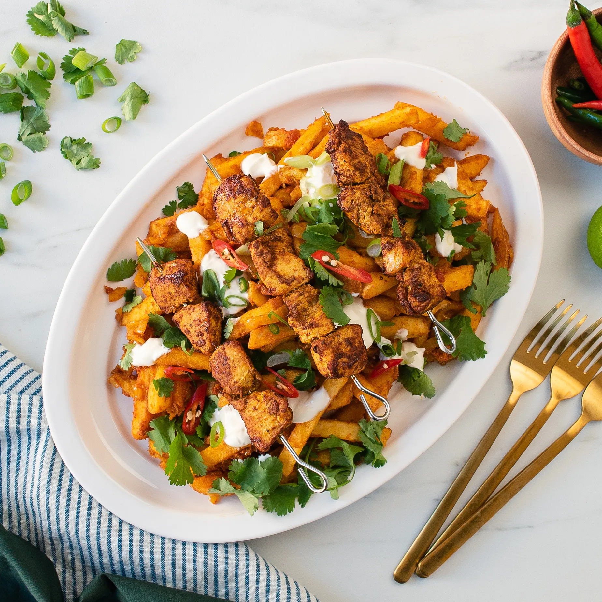

Chicken Tikka and Fries

Description
Chicken breast can be dry and boring, however it doesnt have to be. With the below recipe you can get your healthy macro
along with extra calories and flavours.
Ingredients
- 800 grams skin on fries
- 225 grams chicken breast, diced
- tablespoon tikka masala paste
- 4 tablespoons olive oil
- 1 teaspoon butter
- 1 tablespoon ginger & garlic paste
- 1/2 large onion, diced
- 1 teaspoon chilli powder
- 1 teaspoon turmeric
- 1 teaspoon cumin powder
- 1 teaspoon coriander powder
- 1/2 teaspoon salt
- 1 teaspoon lemon juice
- 125 grams chopped tomatoes (cartons of tomatoes in juice can be used)
- Natural yoghurt (for garnish)
- Chopped chillies (for garnish)
- Chopped coriander (for garnish)
- Chopped spring onions (for garnish)
Instructions
- Start by preparing the chicken tikka. Add 1tbsp of tikka paste to the chicken
and coat all of the pieces. Leave to marinate while you are preparing the masala.
- Add oil and butter to a pan over a medium heat. Once the butter has melted, add in the onions
and ginger garlic paste. Stir until the onions start to brown.
- Next add in the chilli powder, turmeric, cumin, coriander powder, salt and lemon juice.
Mix well and leave the spices to cook for a couple of minutes.
- Add in the chopped tomatoes and cook on a low heat until the liquid has slightly reduced.
- While the masala is cooking, bake or fry the chips until golden.
- At this point you can also put the chicken on skewers and grill for around 10 minutes.
Be sure to turn the skewers over halfway through and allow to cook until the chicken has slightly charred.
- Once the fries are crispy and golden, add them to the masala and mix well so that all the fries are coated well.
- Transfer them to a serving plate and top with dollops of yoghurt, chopped coriander, sliced chillies and spring onions.